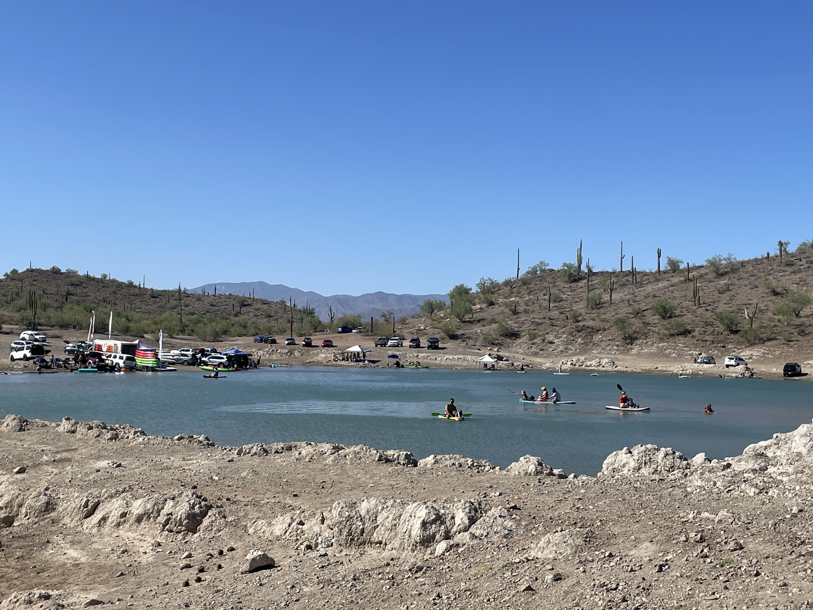

Arizona Summers
Arizona Summers
As a person born and raised in Arizona, I can confirm the brutality that is Summer in Arizona. Arizona natives are a rarity these days, and when a Phoenician like myself encounters someone new to the state, you bet that I give them the “summer spiel.” So read on to learn not just the warnings that come with the notorious AZ heat, but also things to make it more bearable and even some of the good aspects as well.
Believe it or not, you can start feeling the rumblings of Summer in AZ starting as early as April. This year (2025) for example, April 11th reached a high of 101 degrees! By May, you can count on Summer being in full swing all the way until the end of September, where we can finally experience highs below triple digits. The most unbearable segment of the season though has to be July and August. During the hot months, it is common to only exit the comfort of A/C for the essentials, like going to and from work, purchasing groceries and getting gas (standing by the gas pump is gnarly!).
However, Phoenicians are tough, and we don’t let the Summer inhibit us from trying our best to make the most of it. This July for example, my partner and I enjoyed visiting Lake Pleasant with a group of friends-- we rode on jet skis and swam in the lake-- which is a perfect activity to have some fun, but also cool off when you need to. Similarly, my partner and I are lucky enough to have relatives close by who own a pool, so we make it a Friday ritual to take a relaxing dip in the pool-- something I think should be Arizona state law that all homes come equipped with a pool! If you do want to go on a hike or walk your dog though, best do that either super early in the morning (4:00am) or late at night (11:00pm).
For inside activities, venturing to the movie theater is a perfect way to escape the heat by enjoying a film inside a nice cool dark theater. As an added plus, Summer time is often when all the “Summer block-busters” are released, so it makes the tickets even more worth it (and the delicious popcorn of course!). Something else I was recently introduced to, and that makes a perfect indoor hobby, is the strategy card game Magic the Gathering (MTG). A competitively mystical game that takes some time to learn (for me at least) and that you can even play with only two players. Card/ board-games are ideal for those days when stepping outside is the last thing you want to do! Of course, there’s the other mainstream indoor hobbies as well, such asvideogames, reading, cooking, crafting, etc.-- so choose what makes most sense to you and the mood you're in.
Apart from the fun aspects, there are some rules everyone should abide by while making it through the summer heat. The most obvious-- drink lots of water! And this can’t be overstated enough-- approximately 4,298 people end up in Arizona emergency rooms every year due to heat-related illness (azdhs.gov). It comes as no surprise when I hear another person had to be airlifted from a mountain trail due to heat stroke. Other tools in one’s arsenal should include sun protection, like sunscreen, a hat and sunglasses. Especially for fair skinned individuals like myself, I know my scalp will literally crisp if I don’t wear a hat. Lastly, your car is an oven during the Summer, so please don’t end up as another statistic and don’t leave any children or pets in the car!
I can say from years of experience that a part of me dies inside when I start to see the degrees in the forecast creep up, but I can’t deny the fact that I actually look forward to the smell of sunscreen and that first cannon ball into the pool each year. So if you're someone like me who finds Summer in Arizona pretty unbearable, try and find the bright side and just know that come September/ October, you will be grateful for the AMAZING Arizona Fall/Winter time!